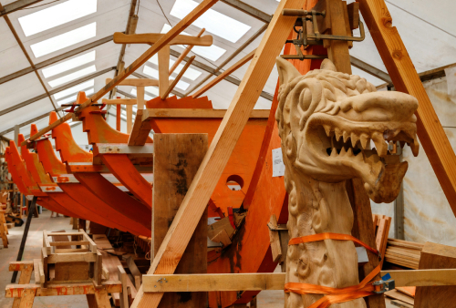

Ragnaröks Skepp
Hissa seglen och styr rodret - rakt in i vikingarnas värld!
Vi är stolta över att presentera vårt senaste tillskott till escape room-upplevelsen - "Ragnaröks
Skepp".
Här får ni chansen att uppleva en tidsresa tillbaka till den mäktiga vikingatiden. Kliv ombord
på ett enormt vikingaskepp som är byggt helt i trä och redo att ta er med på ett äventyr ni sent kommer
att glömma.
Vad kan du förvänta dig?
I detta rum är ni en del av besättningen på ett vikingaskepp, fast i en storm på det vilda havet. Skeppet är byggt med stor detaljrikedom, och ni kommer att känna vinden i seglen och känna på den kraftiga sjögången. Men lugnet på havet varar inte länge - en mystisk storm drar in, och ni blir plötsligt fångade.
Er uppgift:
För att undkomma denna storm och rädda er själva från en säker undergång måste ni lösa de forntida gåtorna som vikingarna lämnat efter sig. Dessa gåtor, utformade för att testa både er logik och samarbetsförmåga, är nyckeln till att hitta lösningen och säkerställa er överlevnad. Hinner ni lösa alla mysterier innan skeppet går under?
En utmaning för alla!
Oavsett om ni är vana escape room-spelare eller nybörjare, kommer "Ragnaröks Skepp" att ge er en
utmaning. Rummet är designat för att vara både spännande och tankeväckande, med en balans av fysiska och
mentala uppgifter. Det kommer att kräva teamwork, kommunikation och snabbhet för att klara av alla
hinder och avslöja rummet hemligheter innan tiden rinner ut.
Förbered er på en upplevelse utöver det vanliga.
Från den detaljerade inredningen till den intensiva berättelsen, kommer "Ragnaröks Skepp" att få er att
känna som om ni verkligen befinner er på ett vikingaskepp på väg mot ett osäkert öde. Den mystiska
stormen kommer att sätta er på prov och testa era förmågor att lösa problem under tidspress.
Så samla ditt team, sätt segel och gör er redo för ett episkt äventyr! Vägen till säkerhet går genom att
lösa gåtorna - och endast de bästa vikingarna kommer att klara det.
Boka er plats nu och upplev den ultimata utmaningen!